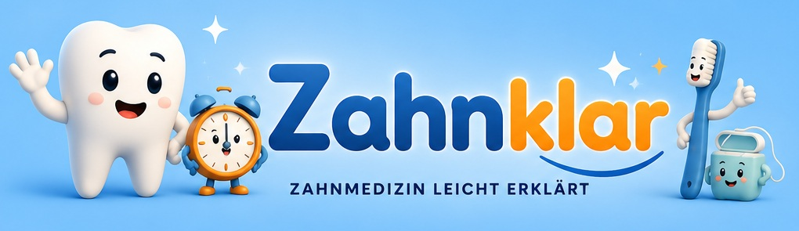

Zahnmedizin leicht erklärt
Wissen, das den Zahnarztbesuch leichter macht.
Verständliche Erklärungen rund um Zähne, Behandlungen und Mundgesundheit – ruhig, anschaulich und ohne unnötiges Fachchinesisch.

Über Zahnklar
Komplexe Zahnmedizin verständlich machen
Hinter Zahnklar steht ein in Deutschland ausgebildeter Zahnarzt. Ziel ist es, typische Fragen rund um Zahnarztbesuche, Behandlungen und Mundgesundheit verständlich einzuordnen.
Die Inhalte sollen Orientierung geben, Ängste abbauen und dabei helfen, Gespräche in der Zahnarztpraxis besser zu verstehen.
Wichtiger Hinweis
Allgemeine Information statt Ferndiagnose
Die Inhalte von Zahnklar dienen ausschließlich der allgemeinen Information und Aufklärung. Sie ersetzen keine individuelle zahnärztliche Untersuchung, Diagnose oder Behandlung.
Social Media
Zahnklar folgen
Ausführliche Erklärungen, kurze Wissensformate und aktuelle Inhalte findest du auf den Zahnklar-Kanälen.